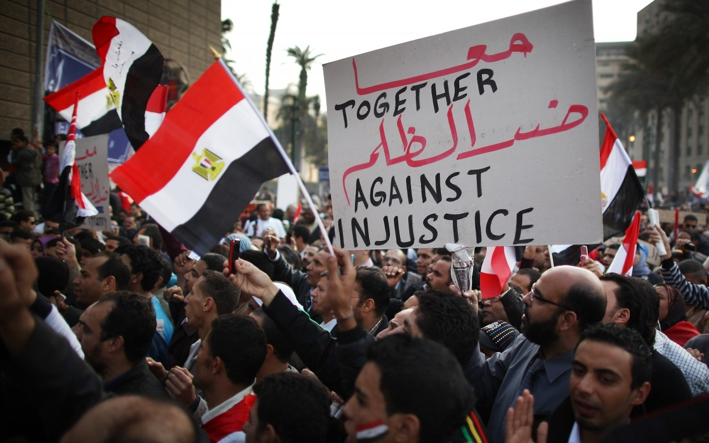
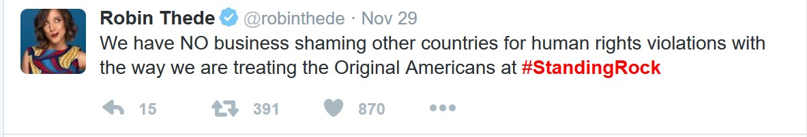
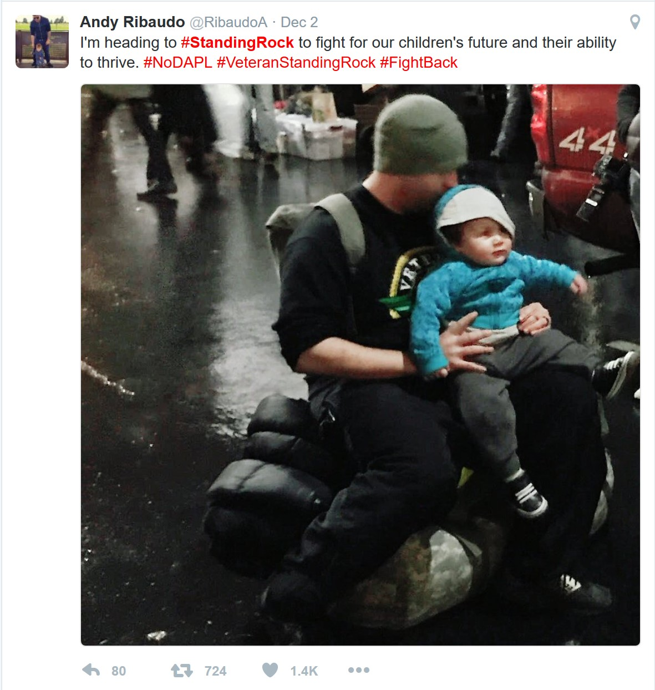
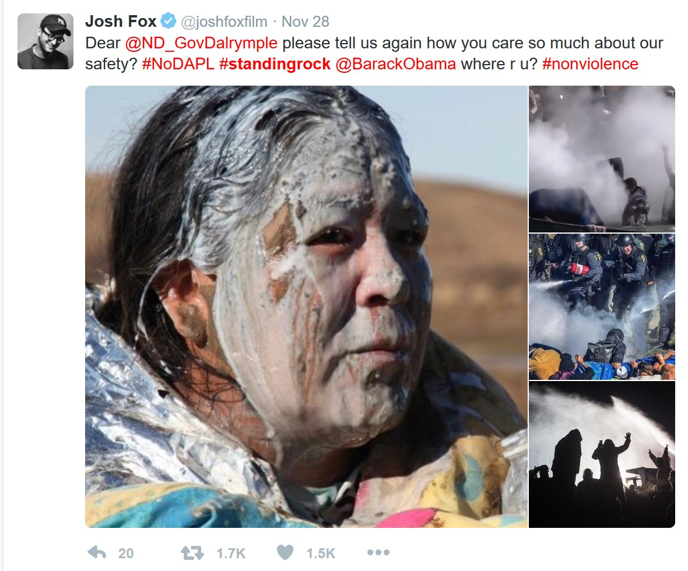

Digital activism is the use of social media, the internet, mobile devices, and other technology to aid in political or social change. Digital activism can be more specifically defined as social media activism, online activism, cyber-activism, and online organizing. Although these terms are all quite similar, they have a few distinct differences, with the main difference being whether or not the internet is being used for activism purposes (Joyce, 2010) Social media activism is a form of activism that has become popular with the widespread use of Facebook, Twitter, and other social media sites. With the help of social media, activists have a larger platform on which to spread awareness for their cause, gain support, and organize online. Digital activism can be forming Facebook groups or communities, tweeting using specific hashtags, sharing photos or posts related to political or social causes, or simply a like on social media. The following video is a “How-to” that describes how to become a digital activist and what it takes to be success in using digital activism.
To some, digital activism is ineffective and can be considered "armchair activism" or "slacktivism". In these situations, digital activism is seen as the easy way out and that true activism is done in person and makes a more significant difference. A common viewpoint is that “an online activist need only reach for their laptop and click a button to feel as though they are contributing to a cause” (Gowling, 2016). Is digital activism really enough to make a difference? When has digital activism been successful?
One famous case of digital activism was the Arab Spring, which is a main focus of Muzzamil Hussain’s arguments. Arab Spring was a political uprising in the Middle East in 2011 demanding political reform, new government, and social justice. It was a political movement that gained its traction through the use of digital media, especially social media and Twitter (Amnesty International, 2016) In his 2013 book Democracy’s Fourth Wave?, Hussain looks at the Arab Spring and how digital media made a difference. He writes,
“Democratization movements had existed long before technologies such as mobile phones and the internet came to these countries. But with these technologies, people sharing an interest in democracy built extensive networks, created social capital, and organized political action; virtual networks materialized in the streets. Brave citizens made their shared opposition to the authoritarian rule known, and digital media served as an ‘information equalizer’...allowing for both the telling of compelling stories and the management of all the small communications and logistics tasks that must happen if an uprising is to succeed (Seib 2008)” (Hussain, 2013)
The use of social media and digital activism had a huge impact on the success of the uprisings and reform that was seen in the Arab Spring. Hussain argues that although it is hard to tell whether or not the uprising would have occurred had it not been for digital media, the movement was amplified and improved through the use of digital activism (Hussain, 2013). Overall, Hussain supports digital activism as a valid and useful form of activism that can make an impact on social change because it calls one’s networks into action to create real change.
Recently, digital activism has become a popular tool for activism in regards to equality in the United States. Some of the most recent forms of digital activism have been seen through the Black Lives Matter movement, the Standing Rock protests, the 2016 Presidential Election, and many more social movements and causes. Digital activism has become an important form of activism for the Black Lives Matter movement because it has united people from all over the United States as one. It has given many people a voice and a platform to share their thoughts, feelings, experiences, and spread their support for the cause. Activists have taken to social media to plan their protests, participate in protests or show their support from afar, or use it as a platform to share their own personal experiences. The Black Lives Matter movement has been very social media and digitally oriented. Without the use and support of social media, the Black Lives Matter movement could possibly have less widespread awareness, visibility, and support.
Another current example of digital activism is the digital presence of the Standing Rock protests. While there are many people traveling to North Dakota to protest the Dakota Access Pipeline in person, a lot of the attention and support is coming through the use of digital activism on social media. Celebrities and people all over the United States are sharing their opposition to the pipeline and calling others to share their opposition as well. Social media and other digital platforms have been used to spread awareness about the pipeline and why activists are pushing back against it. Various protests and other calls to action have been organized through the use of social media in digital activism.The digital presence held in the Standing Rock protests is extremely important because it has called many people to action and has greatly raised awareness about the pipeline and the protests against it.
  Digital activism was also heavily used in the 2016 Presidential Election. Throughout the election process, many people were ready to #FeelTheBern or share they were #WithHer. Candidates used their personal accounts as a way to directly address voters and communicate their campaign platforms. In turn, voters used social media and the internet to show their support for the candidates they were voting for. Digital activism has become a vital part of politics and gaining support for campaigns. Digital activism could also be seen in the 2016 Presidential Election on Facebook by the promoted option of sharing that you had voted. By sharing you had voted, many hoped to inspire others to also get out and exercise their right to vote in the election. Digital activism can have a major impact on campaigns, politics, and democracy.
Overall, there are many forms of digital activism that can make a real difference in social and political change. As technologies continue to develop, digital activism will likely continue to develop as well. Online activism is still relatively new compared to the physical activism that has been seen in various societies for centuries. The growing effect of digital activism has the potential to create real social and political change in the United States and around the world.
WORKS CITED
Amnesty International. (2016). The ‘Arab Spring’: Five Years On. Retrieved from https://www.amnesty.org/en/latest/campaigns/2016/01/arab-spring-five-years-on/
Gowling, Jordan. (2016). Protesting in the digital age: Online activism is not enough. The McGill Tribune. Retrieved from http://www.mcgilltribune.com/opinion/protesting-digital-age-online-activism-not-enough-254364/
Howard, P. N., & Hussain, M. M. (2013). Democracy's fourth wave?: Digital media and the Arab Spring. Oxford University Press.
Joyce, Mark. (Ed.). (2010). Digital activism decoded: The new mechanics of change. New York, NY: International Debate Education Association.